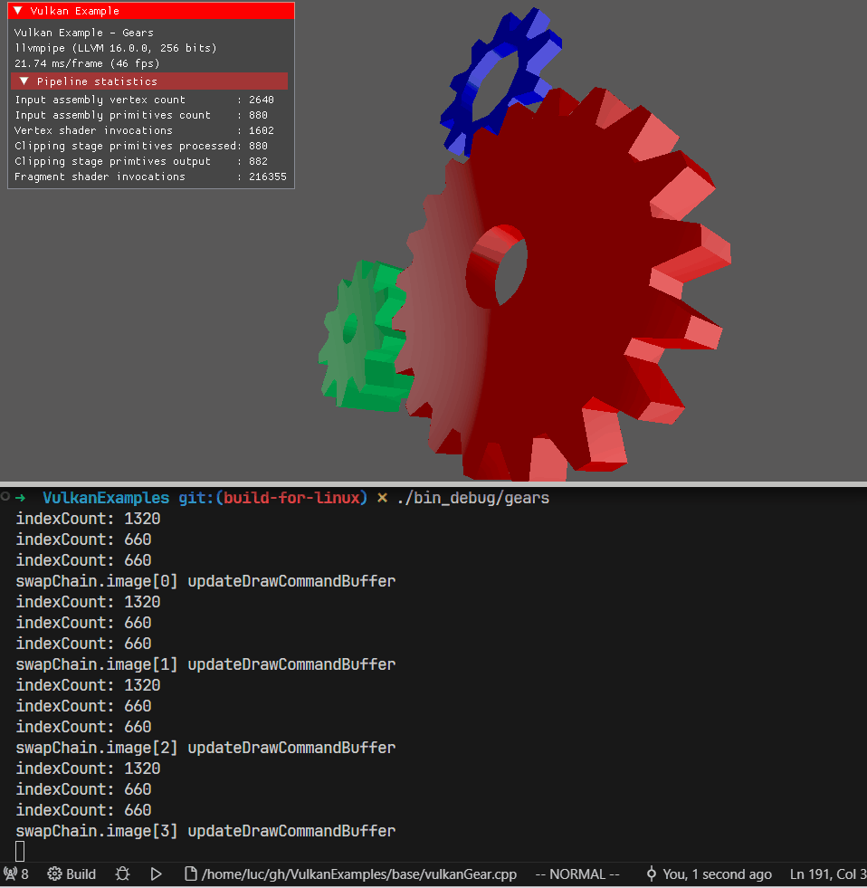

Vulkan 是一个低开销、跨平台的二维和三维图形与计算的应用程序接口，由 Khronos 在2015年在 GDC 上首次发布。它旨在提供高效能和更均衡的 CPU 和 GPU 占用，类似于 Direct3D 12 和 AMD Mantle。
本文主要记录一下在 llvmpipe 软渲染 Vulkan 驱动下， 一个 vulkan 应用程序 (demo) 的执行过程。
VK_ICD_FILENAMES
Vulkan 驱动的探测和加载是通过 ICD (Installable Client Driver) 机制实现的。当环境上同时存在多个 Vulkan 驱动时，使用环境变量 VK_ICD_FILENAMES 来选择指定的 vulkan 驱动
1
2
3
4
| {
"name": "VK_ICD_FILENAMES",
"value": "/home/luc/mesa-install/share/vulkan/icd.d/lvp_icd.x86_64.json"
}
|
MESA_VK_WSI_PRESENT_MODE
Vulkan 程序的送显由 WSI (Window System Interface) 层实现，支持以下模式
- fifo
- relaxed
- mailbox
- immediate
Call Stack
1
2
3
4
5
6
7
8
9
10
11
12
13
14
15
16
17
18
19
| libvulkan_lvp.so!llvmpipe_create_screen(struct sw_winsys * winsys) (\home\luc\gh\forked\src\gallium\drivers\llvmpipe\lp_screen.c:1149)
libvulkan_lvp.so!sw_screen_create_named(struct sw_winsys * winsys, const struct pipe_screen_config * config, const char * driver) (\home\luc\gh\forked\src\gallium\auxiliary\target-helpers\sw_helper.h:43)
libvulkan_lvp.so!sw_screen_create_vk(struct sw_winsys * winsys, const struct pipe_screen_config * config, _Bool sw_vk) (\home\luc\gh\forked\src\gallium\auxiliary\target-helpers\sw_helper.h:90)
libvulkan_lvp.so!pipe_loader_sw_create_screen(struct pipe_loader_device * dev, const struct pipe_screen_config * config, _Bool sw_vk) (\home\luc\gh\forked\src\gallium\auxiliary\pipe-loader\pipe_loader_sw.c:427)
libvulkan_lvp.so!pipe_loader_create_screen_vk(struct pipe_loader_device * dev, _Bool sw_vk, _Bool driver_name_is_inferred) (\home\luc\gh\forked\src\gallium\auxiliary\pipe-loader\pipe_loader.c:181)
libvulkan_lvp.so!lvp_physical_device_init(struct lvp_physical_device * device, struct lvp_instance * instance, struct pipe_loader_device * pld) (\home\luc\gh\forked\src\gallium\frontends\lavapipe\lvp_device.c:1240)
libvulkan_lvp.so!lvp_enumerate_physical_devices(struct vk_instance * vk_instance) (\home\luc\gh\forked\src\gallium\frontends\lavapipe\lvp_device.c:1416)
libvulkan_lvp.so!enumerate_physical_devices_locked(struct vk_instance * instance) (\home\luc\gh\forked\src\vulkan\runtime\vk_instance.c:434)
libvulkan_lvp.so!enumerate_physical_devices(struct vk_instance * instance) (\home\luc\gh\forked\src\vulkan\runtime\vk_instance.c:459)
libvulkan_lvp.so!vk_common_EnumeratePhysicalDevices(VkInstance _instance, uint32_t * pPhysicalDeviceCount, VkPhysicalDevice * pPhysicalDevices) (\home\luc\gh\forked\src\vulkan\runtime\vk_instance.c:475)
libvulkan.so.1![Unknown/Just-In-Time compiled code] (Unknown Source:0)
libvulkan.so.1!vkEnumeratePhysicalDevices (Unknown Source:0)
vk::DispatchLoaderStatic::vkEnumeratePhysicalDevices(const vk::DispatchLoaderStatic * const this, VkInstance instance, uint32_t * pPhysicalDeviceCount, VkPhysicalDevice * pPhysicalDevices) (\usr\local\include\vulkan\vulkan.hpp:1047)
vk::Instance::enumeratePhysicalDevices<std::allocator<vk::PhysicalDevice>, vk::DispatchLoaderStatic>(const vk::DispatchLoaderStatic & d, const vk::Instance * const this) (\usr\local\include\vulkan\vulkan_funcs.hpp:120)
vks::Context::pickDevice(vks::Context * const this, const vk::SurfaceKHR & surface) (\home\luc\gh\VulkanExamples\base\vks\context.hpp:426)
vks::Context::createDevice(vks::Context * const this, const vk::SurfaceKHR & surface) (\home\luc\gh\VulkanExamples\base\vks\context.hpp:233)
vkx::ExampleBase::initVulkan(vkx::ExampleBase * const this) (\home\luc\gh\VulkanExamples\base\vulkanExampleBase.cpp:123)
vkx::ExampleBase::run(vkx::ExampleBase * const this) (\home\luc\gh\VulkanExamples\base\vulkanExampleBase.cpp:75)
main(const int argc, const char ** argv) (\home\luc\gh\VulkanExamples\examples\deferredmultisampling\deferredmultisampling.cpp:684)
|
Debug Options
就像其它 Gallium 驱动一样，llvmpipe 也提供了很多调试和性能测试的选项, 这此选项通过环境变量 LP_DEBUG 和 LP_PERF 来设置
1
2
3
4
5
6
7
8
9
10
11
12
13
14
15
16
17
18
19
20
21
22
23
24
25
26
27
28
29
30
| debug_parse_flags_option: help for LP_DEBUG:
| pipe [0x0000000000000001]
| tgsi [0x0000000000000002]
| tex [0x0000000000000004]
| setup [0x0000000000000010]
| rast [0x0000000000000020]
| query [0x0000000000000040]
| screen [0x0000000000000080]
| counters [0x0000000000000800]
| scene [0x0000000000001000]
| fence [0x0000000000002000]
| no_fastpath [0x0000000000080000]
| linear [0x0000000000100000]
| linear2 [0x0000000000200000]
| mem [0x0000000000004000]
| fs [0x0000000000008000]
| cs [0x0000000000010000]
| accurate_a0 [0x0000000000800000]
| mesh [0x0000000001000000]
debug_parse_flags_option: help for LP_PERF:
| texmem [0x0000000000000001]
| no_mipmap [0x0000000000000004]
| no_linear [0x0000000000000008]
| no_mip_linear [0x0000000000000002]
| no_tex [0x0000000000000010]
| no_blend [0x0000000000000020]
| no_depth [0x0000000000000040]
| no_alphatest [0x0000000000000080]
| no_rast_linear [0x0000000000000100]
| no_shade [0x0000000000000200]
|
Gears
Vulkan 应用的“神奇”之处在于，场景在变，而它的 draw() 函数却不随着被反复调用
